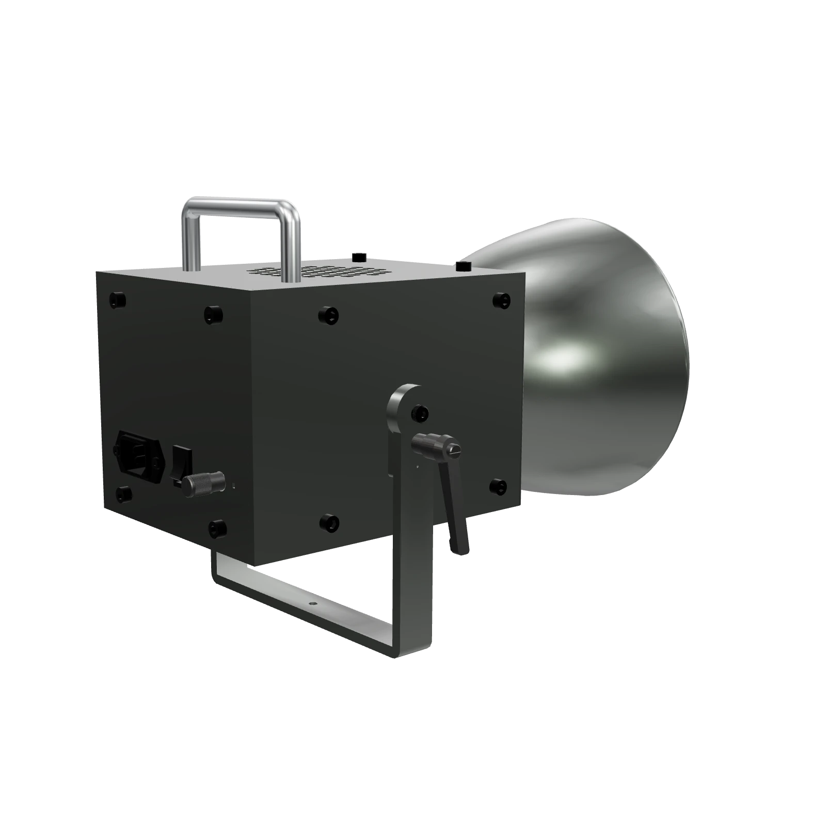

Every white, and every color
An RGBWW COB engine mixes warm and cool white for clean skin tones, and full color when the scene needs a gel.

A COB studio light for photographers and videographers. Warm tungsten to cool daylight, or any color, from the dial on the back or from your phone.
The lights are off.
Scroll to bring the lights up. Drag the light to turn it, and the slider to change its color.
An RGBWW COB engine mixes warm and cool white for clean skin tones, and full color when the scene needs a gel.
Turn the dial on the back for quick changes on set. Connect over Bluetooth when you want exact values you can save and repeat.
The power supply and LED driver sit in their own cavity, away from the light engine, so heat stays where it belongs.
In development
Show Savitara the shot you want. It works out the rest of the lighting plan and sets your lights to match.
Your iPhone maps the space you are shooting in.
Pick a photo or clip with the look you want to recreate.
See how many lights you need and where they go. Savitara sets each one.
Portraits, interviews and short films. A light that is quick to set up and gives the same result every time you come back to a look.
New product and no photographer? Savitr I gives you clean, professional light for listings and ads from a desk or kitchen table.
Savitr I is assembled in small batches in Nebraska. The first twenty go to a founding group of creators who help build the shared preset library and get a direct line to the team.
First units are planned for February 2027.
Reserve your spot